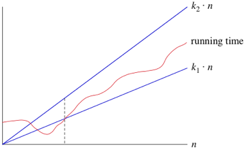

What's Time Complexity And Why Do We Need It ?

Let's look at a simple implementation of linear search:
var doLinearSearch = function(array, targetValue) {
for (var guess = 0; guess < array.length; guess++) {
if (array[guess] === targetValue) {
return guess; // found it!
}
}
return -1; // didn't find it
};
Let's denote the size of the array (array.length) by n nn. The maximum number of times that the for-loop can run is n nn, and this worst case occurs when the value being searched for is not present in the array.
Each time the for-loop iterates, it has to do several things:
- compare guess with array.length
- compare array[guess] with targetValue
- possibly return the value of guess
- increment guess.
Each of these little computations takes a constant amount of time each time it executes. If the for-loop iterates n times, then the time for all n iterations is c1*n, where c1 is the sum of the times for the computations in one loop iteration. Now, we cannot say here what the value of c1 is, because it depends on the speed of the computer, the programming language used, the compiler or interpreter that translates the source program into runnable code, and other factors.
This code has a little bit of extra overhead, for setting up the for-loop (including initializing guess to 0) and possibly returning -1 at the end. Let's call the time for this overhead c2, which is also a constant. Therefore, the total time for linear search in the worst case is c1*n + c2
As we've argued, the constant factor c1 and the low-order term c2 don't tell us about the rate of growth of the running time. What's significant is that the worst-case running time of linear search grows like the array size n. The notation we use for this running time is Θ(n) . That's the Greek letter "theta," and we say "big-Theta of n" or just "Theta of n."
When we say that a particular running time is Θ(n), we're saying that once n gets large enough, the running time is at least k1*n and at most k2*n for some constants k1 and k2. Here's how to think of Θ(n):

For small values of n nn, we don't care how the running time compares with k1*n or k2*n. But once n gets large enough—on or to the right of the dashed line the running time must be sandwiched between k1*n and k2*n.As long as these constants k1 and k2 exist, we say that the running time is Θ(n).
We are not restricted to just n in big-Θ notation. We can use any function, such as n 2 , nlog 2 n, or any other function of n. Here's how to think of a running time that is Θ(f(n)) for some funtion f(n).

Once n gets large enough, the running time is between k1*f(n) and k2*f(n)
In practice, we just drop constant factors and low-order terms. Another advantage of using big-Θ notation is that we don't have to worry about which time units we're using. For example, suppose that you calculate that a running time is 6n 2 + 100n + 300 microseconds. Or maybe it's milliseconds. When you use big-Θ notation, you don't say. You also drop the factor 6 and the low-order terms 100n + 300 and you just say that the running time is Θ(n 2 ).
When we use big-Θ notation, we're saying that we have an asymptotically tight bound on the running time. "Asymptotically" because it matters for only large values of n."Tight bound" because we've nailed the running time to within a constant factor above and below.
We use big-Θ notation to asymptotically bound the growth of a running time to within constant factors above and below. Sometimes we want to bound from only above.
For example, although the worst-case running time of binary search is
Θ(log2n), it would be incorrect to say that binary search runs in Θ(log2n) time in all cases. What if we find the target value upon the first guess? Then it runs in Θ(1) time.The running time of binary search is never worse than
Θ(log2n) but it's sometimes better.
It would be convenient to have a form of asymptotic notation that means "the running time grows at most this much, but it could grow more slowly." We use "big-O" notation for just such occasions.
If a running time is O(f(n)), then for large enough n , the running time is at most k*f(n) for some constant k. Here's how to think of a running time that is O(f(n)).

We say that the running time is "big-O of f(n)" or just "O of f(n)". We use big-O notation for asymptotic upper bounds, since it bounds the growth of the running time from above for large enough input sizes.
Now we have a way to characterize the running time of binary search in all cases. We can say that the running time of binary search is always O(log2n). We can make a stronger statement about the worst-case running time: it's Θ(log2n). But for a blanket statement that covers all cases, the strongest statement we can make is that binary search runs in O(log2n) time.
If you go back to the definition of big-Θ notation, you'll notice that it looks a lot like big-O notation, except that big-Θ notation bounds the running time from both above and below, rather than just from above. If we say that a running time is Θ(f(n)) in a particular situation, then it's also O(f(n)). For example, we can say that because the worst-case running time of binary search is Θ(f(n)), it is also O(f(n)).
The converse is not necessarily true: as we've seen, we can say that binary search always runs in Θ(log2n) time but not that it always runs in O(log2n) time.
Because big-O notation gives only an asymptotic upper bound, and not an asymptotically tight bound, we can make statements that at first glance seem incorrect, but are technically correct. For example, it is absolutely correct to say that binary search runs in O(n) time. That's because the running time grows no faster than a constant times n. In fact, it grows slower.
Think of it this way. Suppose you have 10 dollars in your pocket. You go up to your friend and say, "I have an amount of money in my pocket, and I guarantee that it's no more than one million dollars." Your statement is absolutely true, though not terribly precise.
One million dollars is an upper bound on 10 dollars, just as O(n) is an upper bound on the running time of binary search. Other, imprecise, upper bounds on binary search would be O(n2), O(n3) and O(2n). But none of Θ(n), Θ(n2), Θ(n3) ans Θ(2n) would be correct to describe the running time of binary search in any case.
Sometimes, we want to say that an algorithm takes at least a certain amount of time, without providing an upper bound. We use big-Ω notation; that's the Greek letter "omega."
If a running time is Ω(f(n)), then for large enough n, the running time is at least k*f(n) for some constant k. Here's how to think of a running time that is Ω(f(n)).

We say that the running time is "big-Ω of f(n)" We use big-Ω notation for asymptotic lower bounds, since it bounds the growth of the running time from below for large enough input sizes.
Just as Θ(f(n)) automatically implies O(f(n)) it also automatically implies Ω(f(n)).So we can say that the worst-case running time of binary search is Ω(log2n)
We can also make correct, but imprecise, statements using big-Ω notation. For example, if you really do have a million dollars in your pocket, you can truthfully say "I have an amount of money in my pocket, and it's at least 10 dollars." That is correct, but certainly not very precise. Similarly, we can correctly but imprecisely say that the worst-case running time of binary search is Ω(1), because we know that it takes at least constant time.
Of course, typically, when we are talking about algorithms, we try to describe their running time as precisely as possible. We provide the examples of the imprecise statements here to help you better understand big-Ω, big-O and
big-Θ.